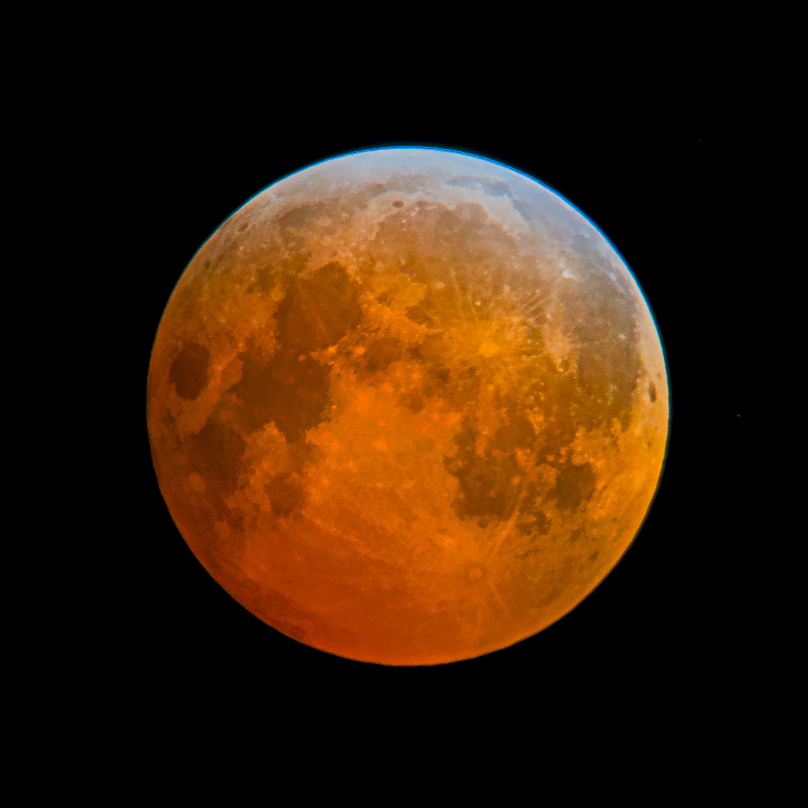
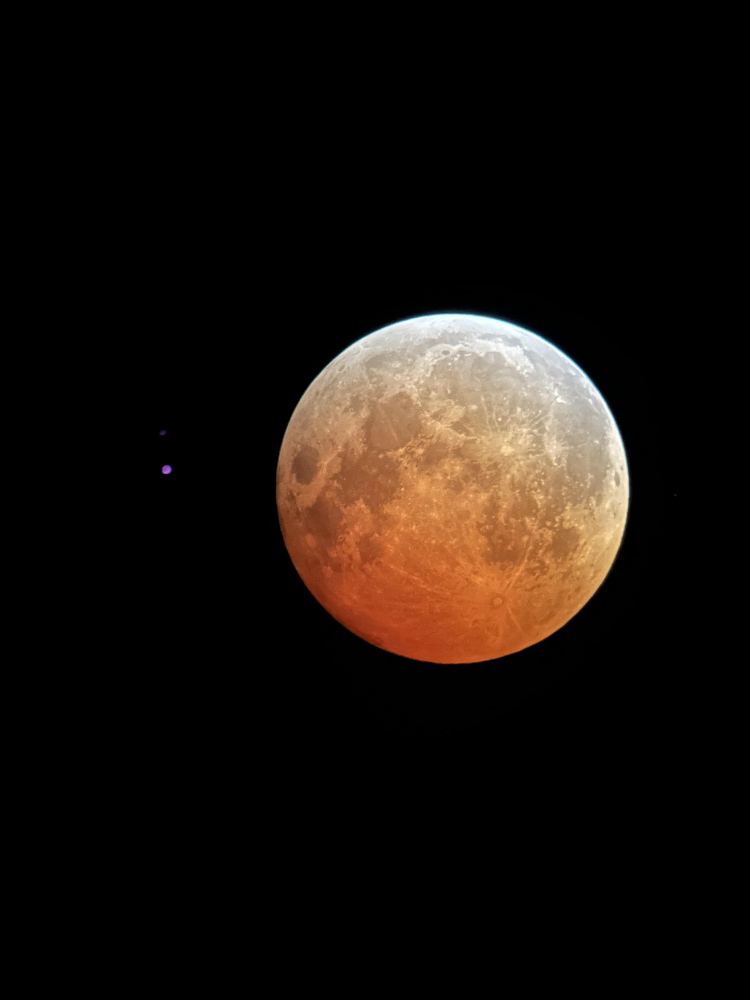
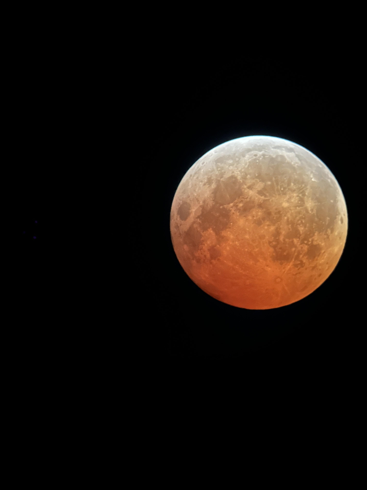
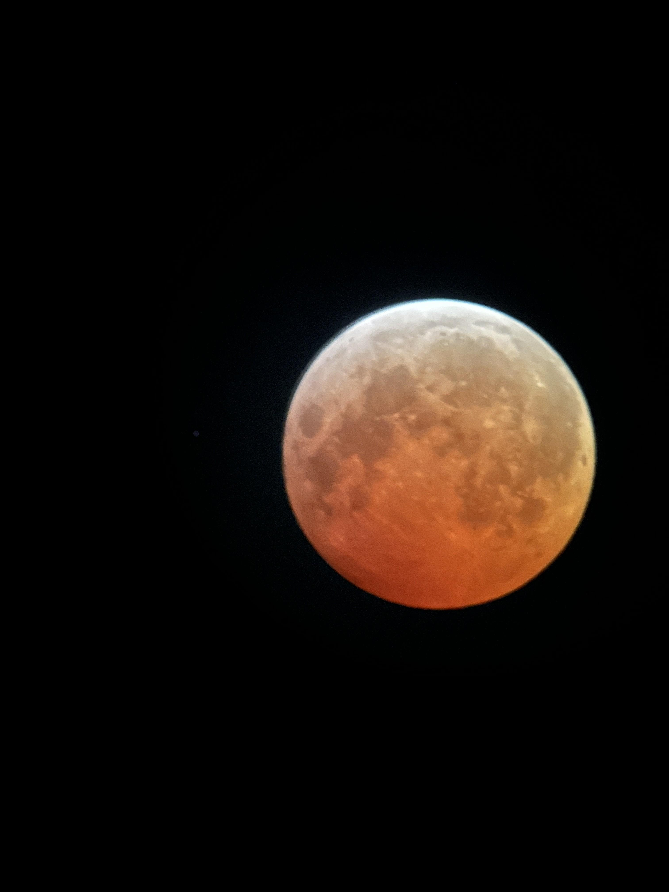
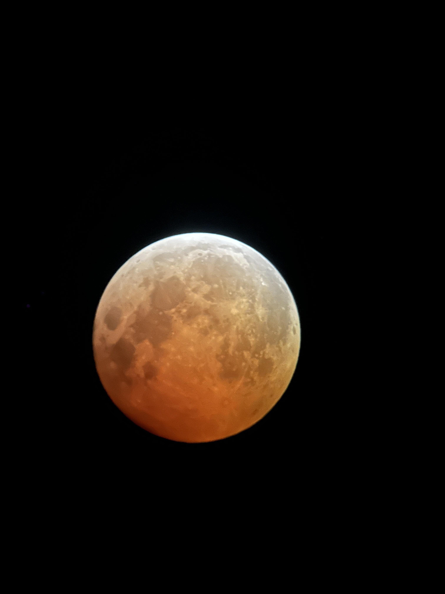
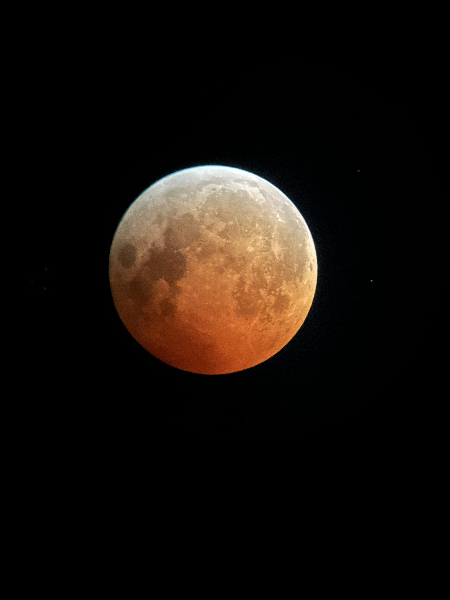

March 2025 Lunar Eclipse
I got up at 3AM on March 14, 2025 to observe the total lunar eclipse that was happening that night (or morning I should say). I was supprised by how dark the sky was because the moon was so bright just a few hours earlier. I was a little disappointed though because the moon was not fully red. I may have gotten up too early for the total eclipse but it was still a very cool experience. Anyway, I set up my telescope and took a few pictures through the telescope's eyepiece with an iPhone 14 Pro. I tried to do everything quickly because it was freezing outside and I wanted to go back to bed. The image above is one of the best ones I took and I edited it a bit to make it look better. Here's a dump of the rest of the pictures I took, these are just raw and unedited.




